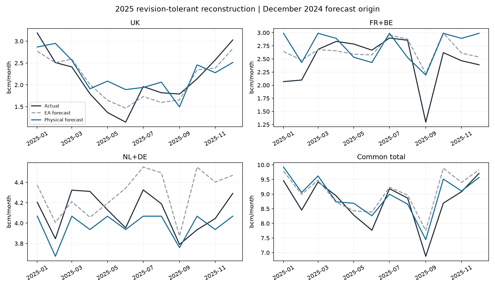

Revision-tolerant historical reconstruction, not a verified real-time backtest. Twelve independent months; no tuning. Open the Excel comparison.
| Group | Model MAE bcm/month | EA MAE bcm/month | Model WAPE % | EA WAPE % | Model signed bias bcm | EA signed bias bcm | n months | Lower sample error |
|---|---|---|---|---|---|---|---|---|
| UK | 0.348 | 0.216 | 16.247 | 10.066 | 1.292 | -0.193 | 12 | EA legacy |
| FR+BE | 0.401 | 0.258 | 16.232 | 10.430 | 3.183 | 2.155 | 12 | EA legacy |
| NL+DE | 0.158 | 0.243 | 3.838 | 5.897 | -1.628 | 2.178 | 12 | Physical routing |
| Common total | 0.360 | 0.382 | 4.129 | 4.372 | 2.847 | 4.140 | 12 | Physical routing |
Mixed ranking: physical routing has lower sample errors for NL+DE and the common subset; EA is better for UK and FR+BE. Planning-capacity sensitivity and source-mix assumptions limit any overall conclusion.

Both use the same archived EA national forecast. Its 2025 bias is +2.840609 bcm. Seasonal LNG is +0.674669 bcm versus revised actual net-saleable LNG, yielding +2.165940 bcm pipeline-production bias. Common subset export bias is +2.847400 bcm for routing and +4.139609 bcm for EA; their boundaries exclude DK/PL and non-Gassco UK packets.
| method | group | n | conditional_MAE_bcm | conditional_WAPE_pct | conditional_bias_bcm | total_volume_error_component_bcm |
|---|---|---|---|---|---|---|
| Capacity143 | FR+BE | 12 | 0.415 | 16.791 | 2.943 | 0.507 |
| Capacity143 | NL+DE | 12 | 0.202 | 4.921 | -2.429 | 0.801 |
| Capacity143 | UK | 12 | 0.343 | 15.978 | -0.514 | 0.439 |
| EA legacy | FR+BE | 12 | 0.191 | 7.712 | 0.949 | 1.205 |
| EA legacy | NL+DE | 12 | 0.139 | 3.388 | 0.203 | 1.974 |
| EA legacy | UK | 12 | 0.244 | 11.382 | -1.153 | 0.960 |
| Physical156 | FR+BE | 12 | 0.366 | 14.807 | 2.354 | 0.828 |
| Physical156 | NL+DE | 12 | 0.241 | 5.856 | -2.890 | 1.262 |
| Physical156 | UK | 12 | 0.318 | 14.847 | 0.536 | 0.757 |
EA has lower conditional destination-share MAE in all three groups. NL+DE conditional MAE is 0.240837 bcm/month for the physical model versus 0.139335 for EA. The physical raw-volume advantage partly arises from error cancellation: its conditional NL+DE underallocation (-2.890048 bcm) is offset by +1.262403 bcm from overprediction of the common total. This is not evidence of superior destination-routing skill.
| destination | n | mae_bcm_month | wape_pct | bias_total_bcm |
|---|---|---|---|---|
| Common total | 12 | 0.342 | 3.921 | 1.747 |
| FR+BE | 12 | 0.423 | 17.134 | 3.450 |
| NL+DE | 12 | 0.158 | 3.838 | -1.628 |
| UK | 12 | 0.368 | 17.165 | -0.075 |
The 143 planning bound reduces exports by 1.099932 bcm and increases disposal by the same amount. NL+DE flows and scores do not change; UK and FR+BE errors remain above EA. This is sensitivity, not a capacity selection based on the scores.
| asset | binding_months |
|---|---|
| EUROPIPE_I | 12 |
| EUROPIPE_II | 11 |
| FRANPIPE | 7 |
| LANGELED_SOUTH | 1 |
| NORPIPE | 11 |
| ZEEPIPE_EXPORT | 11 |
| ZEEPIPE_IIB | 12 |
| node | annual_bcm | weight |
|---|---|---|
| EKOFISK_FEED | 1.597 | 0.083 |
| KARSTO_FEED | 8.225 | 0.425 |
| KOLLSNES_FEED | 1.401 | 0.072 |
| OSEBERG | 0.000 | 0.000 |
| SLEIPNER | 1.249 | 0.065 |
| UK_DIRECT | 6.754 | 0.349 |
| UNMAPPED | 0.120 | 0.006 |
Zero slack on an individual parallel arc such as Zeepipe IIB is not independent proof of an economically material bottleneck. These limits are physical/planning assumptions; allocation among feasible exits also follows the fixed historical preferences.
Residual denominator: 19.346535 bcm; UK-direct weight 34.911735%. Unknown production stays unmapped: 0.120104 bcm, 0.620804% of historical residual. Core routes do not imply field-specific future forecasts: new projects/external production can differ from this historical mix. Balder and Urd each explicitly return twelve zero observations for 2023, Rev returns twelve observations totaling 0.001760 bcm; no overlapping addends were created. Halten Øst has no observations in this calibration year and no volume was added to Åsgard.
| item | meaning |
|---|---|
| Status | Revision-tolerant historical reconstruction; 31 December 2024 origin, January-December 2025; preliminary 12-month diagnostic, not a verified real-time backtest. |
| Result | Mixed sample ranking: routing lower error for NL+DE/common subset; EA lower error for UK/FR+BE. No claim of overall superiority. |
| Conditional result | After removing common-volume error for scoring, EA has lower destination-share MAE in all three groups. The physical NL+DE raw gain partly reflects cancellation between routing underallocation and total-volume overprediction. |
| Revision policy | Current/revised historical production periods before the origin accepted; retrieval vintages retained. 2025 actuals retrieved only after forecast freeze and used for scoring. |
| Snøhvit | Existing seasonal_two_year method: available month-specific daily-rate mean, one observation if needed, overall historical daily-rate mean only for missing calendar months. This pilot has all 24 observations for 2022/2023, two per calendar month, no imputation. |
| Weights | Requested 2023 calibration window; summed signed residual owners by node, including UNMAPPED. Newer Dec2023-Nov2024 Trym window has eleven missing observations and is not activated. No indicative 2025 weights or 2026-certified 2024 quantities used. |
| Ownership | Existing routes used retrospectively with Core Balder/Urd/Rev decisions. Halten Øst has no 2023 observations and no invented volume; Åsgard equals its native field. Oseberg owns Oseberg/Sør/Øst exactly; Heidrun is explicit once. |
| Missing observations | Tommeliten A has three observed months; Hanz/Trym have no 2023 observations. Source blanks remain blank, not filled. Observed cohort/national identity closes every month; this is aggregate reconciliation, not independent proof of every absent component or future mix. |
| Coverage | 0.120104 bcm historical residual production remains UNMAPPED (0.620804% of residual denominator). It is unrouted in forecast. External Trym has no observed calibration numerator; no positive external packet is fabricated. Future external/new-field mix remains uncertain. |
| Capacity | 156 mcm/day Kollsnes declared planning ceiling, no assumed maintenance; 143 predeclared capacity bound. Neither is claimed verified as the December-2024 rating. Other existing engineering envelopes unchanged. No 2025 outage data used. |
| UK comparison | Gross model UK minus explicit Martin Linge forecast and the frozen supported non-Gassco UK residual cohort, once. UK_DIRECT has no capacity limit and no disposal. Raw gross UK remains on Physical flows. |
| Common total | Sum of compatible adjusted UK + FR/BE + NL/DE. Excludes DK/PL; not total Norwegian exports. Wider Gassco total remains unscored because boundary/actual-segment contracts do not permit ranking. |
| Conditional diagnostics | Predicted group shares rescaled to observed common total only after freeze for error decomposition. This removes common-volume error for scoring; it is not another issued forecast or an actual-supply LP solve. |
| Physical limits | NL/DE jointly has corridor bounds; individual DE/NL and DK/PL are allocation proxies. Destination choices also depend on unchanged 2023 preferences, not commercial demand or prices. |
| No tuning | All inputs, planning capacities and two LP forecasts froze before target actual retrieval. No parameter changes after scoring. January-September 2026 actuals remain locked. |
Monthly score table | Input freeze | Evaluation-only policy | Hashes and source captures.